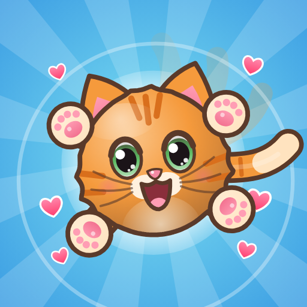
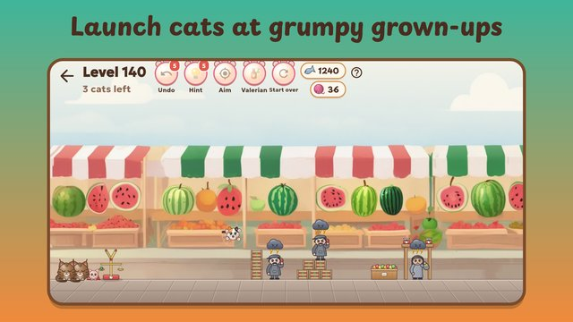

Catapult Cats
A stern head teacher, a grumpy professor, a stuffy boss… Enough frowning! Load the catapult with fluffy cats.
Pull a cat back, aim along the dotted line and let go. Every hit by a cat or a falling desk shrinks the storm cloud over someone's head, and their grey clothes turn bright. When no clouds are left, everyone is happy and the level is won!

- 200 levels in 16 places: school, canteen, gym, village, farm, dacha, university, dorm, library, courtyard, clinic, market, station, factory, building site and a Monday office. Every place has its own catapult: a ruler, a ladle, the scales, a porter's trolley.
- Honest physics: desks, book stacks, glass and pipes really tumble.
- 10 breeds with their own tricks: the British cat hits harder, the Siamese splits into three kittens, the Bengal dashes, the Sphynx glides in his cape, the Maine Coon sweeps everything away.
- A boss at the end of every place, from the head teacher to the stuffy CEO.
- A Cat Café: furnish it, and the bosses you cheered up come to visit and pet the cats.
- A cat album: coats, outfits and the caped Super Sphynx.
- An "aim here" hint, undo, super aim and valerian.
- A daily lesson, daily tasks and holidays with keepsakes; works offline, in English and Russian.
The cats never get hurt: they land softly on their paws and trot back, and people only get surprised and happy. If you like, one reminder when you have not played for a week; it turns off in the settings. Bring a little cuteness to everyone!